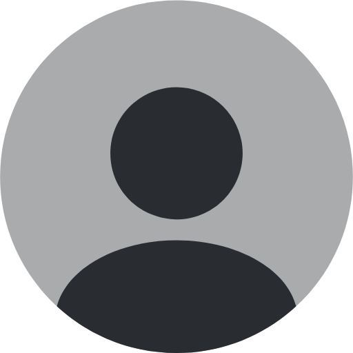

Olá,
usuário
!
Home
Dashboards
Gráficos gerais
Rotas
Adicionar representante
Algum problema?
Contate-nos
Sair >
Análise Coletiva dos Pontos de Coleta
Última coleta de dados: 06:00 30/04/2025
Pontos com
maior nível
de lixo nos últimos 7 dias
Última semana
Último mês
Pontos com
menor nível
de lixo nos últimos 7 dias
Última semana
Último mês
Dados de Ocupação por Ponto
Última coleta de dados: 06:00 30/04/2025
Nível de lixo médio
por período
– Rua A – Últimos 7 dias
Rua A
Rua B
Rua C
Rua D
Rua E
Rua F
Últimos 7 dias
Último mês
Nível de lixo médio
por horário
- Rua A - Últimos 7 dias
Rua A
Rua B
Rua C
Rua D
Rua E
Rua F
Últimos 7 dias
Último mês